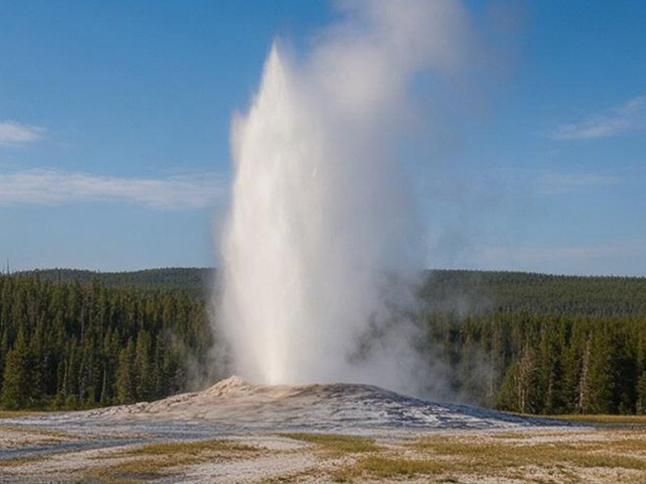

Old Faithful and the Upper Geyser Basin
- Best time
- Morning or evening
- Walk
- 1 to 3 mi of boardwalk
- Effort
- Easy
Old Faithful erupts about every 90 minutes, and the visitor center posts predicted times. Boardwalks continue past Castle, Grand, and other geysers. Come early or late to avoid the crowds.